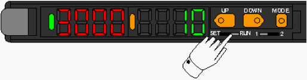

A4-3 How to change fiber sensor amp setting for Output shuttle.
(How to return to shipment setting.) ( 3 )
Fiber sensor amp adjustment for NS-8080 Output shuttle.
Setting of fiber sensor amp (E3X-DA)for Output shuttle device detection.
Part Names of the fiber sensor AMP
Setting of ch1
Switch the channel1/2 selector switch to “1”.
[Setting of threshold]
1. Switch the SET/RUN selector switch to “RUN”.

2. Press the UP/DOWN key to adjust threshold.
(The threshold set to 10 at shipment.)
UP key; Threshold value will become big.
DOWN key; Threshold value will become small.
3. About 5 second passed with no operation UP/DOWN key, sub display value
return to amount of light received vale.
[Standard setting]
1. Switch the SET/RUN selector switch to “SET”.
Amount of light received vale/Threshold vale are displayed.
2. Press the MODE button once to change [0.Operation mode].
Choose [DON] (Dark on) by UP/DOWN key.
3. Press the MODE button once to change [1.Detectinig function].
Choose [HS] (High speed) by UP/DOWN key.
4. Press the MODE button once to change [2.Timer function].
Choose [----] (Timer function invalidity) by UP/DOWN key.
5. Press the MODE button once to change [3.Twin output].
Choose [2OUT] (Twin channel output) by UP/DOWN key.
6. Press the MODE button once to change [4.Mode key setting].
Choose [PTUN] (Power tuning execution) by UP/DOWN key.
7. Press the MODE button once to change [Power tuning targeted value].
Cheese the power tuning targeted level by UP/DOWN key.
(The power tuning targeted value set to 3000 at shipment.)
UP key; Targeted value will become big.
DOWN key; Targeted value will become small.
8. Press the MODE button once to change [5.Display change].
Choose the [Amount of light received/Threshold value] by UP/DOWN key.
9. Press the MODE key once to change [6.Display direction].
Choose the [D123] (normal display) by UP/DOWN key.
10. Press the MODE key once to return to beginning display.
11. Switch the SET/RUN selector switch to “RUN”.
Setting of Ch1 is finish.
Setting of ch2
Switch the channel1/2 selector switch to “2”.
[Setting of threshold]
1. Switch the SET/RUN selector switch to “RUN”.
2. Press the UP/DOWN key to adjust threshold.
(The threshold set to 2000 at shipment.)
UP key; Threshold value will become big.

DOWN key; Threshold value will become small.
3. About 5 second passed with no operation UP/DOWN key, sub display value
return to amount of light received vale.
[Standard setting]
1. Switch the SET/RUN selector switch to “SET”.
Amount of light received vale/Threshold vale are displayed.
2. Press the MODE button once to change [0.Operation mode].
Choose [LON] (Light on) by UP/DOWN key.
3. Press the MODE button once to change [1.Detectinig function].
Choose [HS] (High speed) by UP/DOWN key.
4. Press the MODE button once to change [2.Timer function].
Choose [----] (Timer function invalidity) by UP/DOWN key.
5. Press the MODE button once to change [3.Twin output].
Choose [2OUT] (Twin channel output) by UP/DOWN key.
6. Press the MODE button once to change [4.Mode key setting].
Choose [PTUN] (Power tuning execution) by UP/DOWN key.
7. Press the MODE button once to change [Power tuning targeted value].
Choose the power tuning targeted level by UP/DOWN key.
(The power tuning targeted value set to 3000 at shipment.)
UP key; Targeted value will become big.
DOWN key; Targeted value will become small.
8. Press the MODE button once to change [5.Display change].
Choose the [Amount of light received/Threshold value] by UP/DOWN key.

[Amount of light received / Threshold value are displayed]
9. Press the MODE key once to change [6.Display direction].
Choose the [D123] (normal display) by UP/DOWN key.
10. Press the MODE key once to return to beginning display.
11. Switch the SET/RUN selector switch to “RUN”.
Setting of Ch2 is finish.